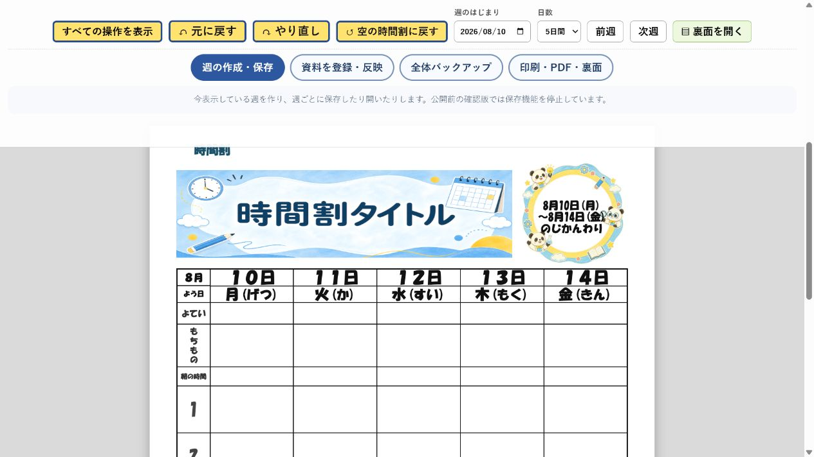
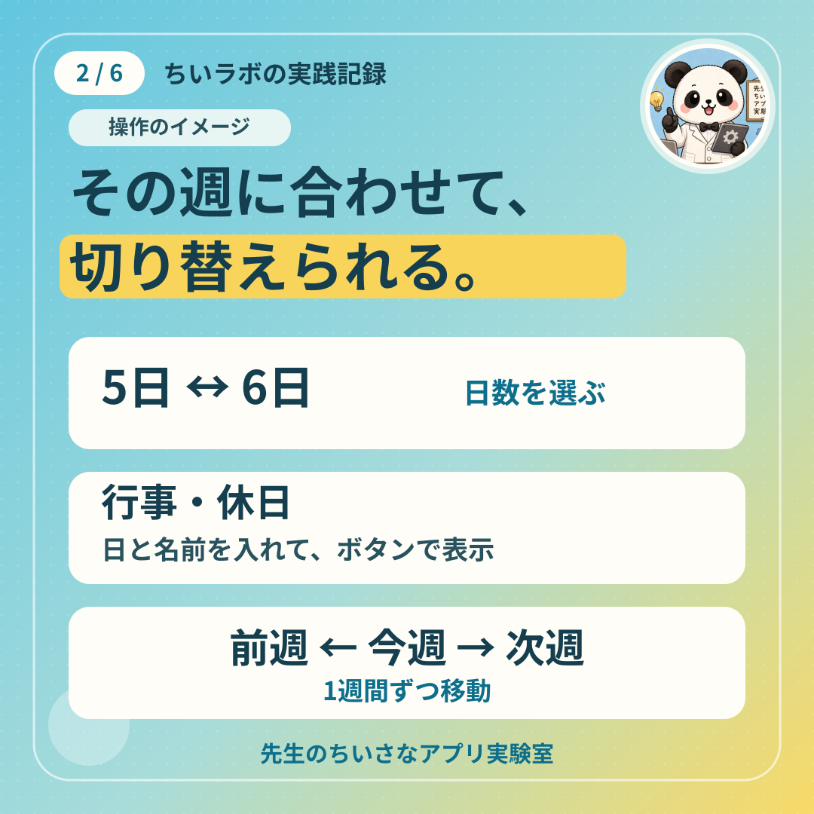
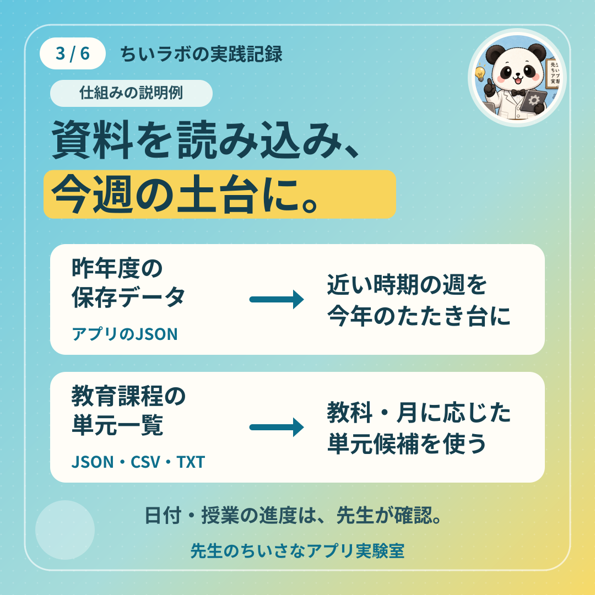
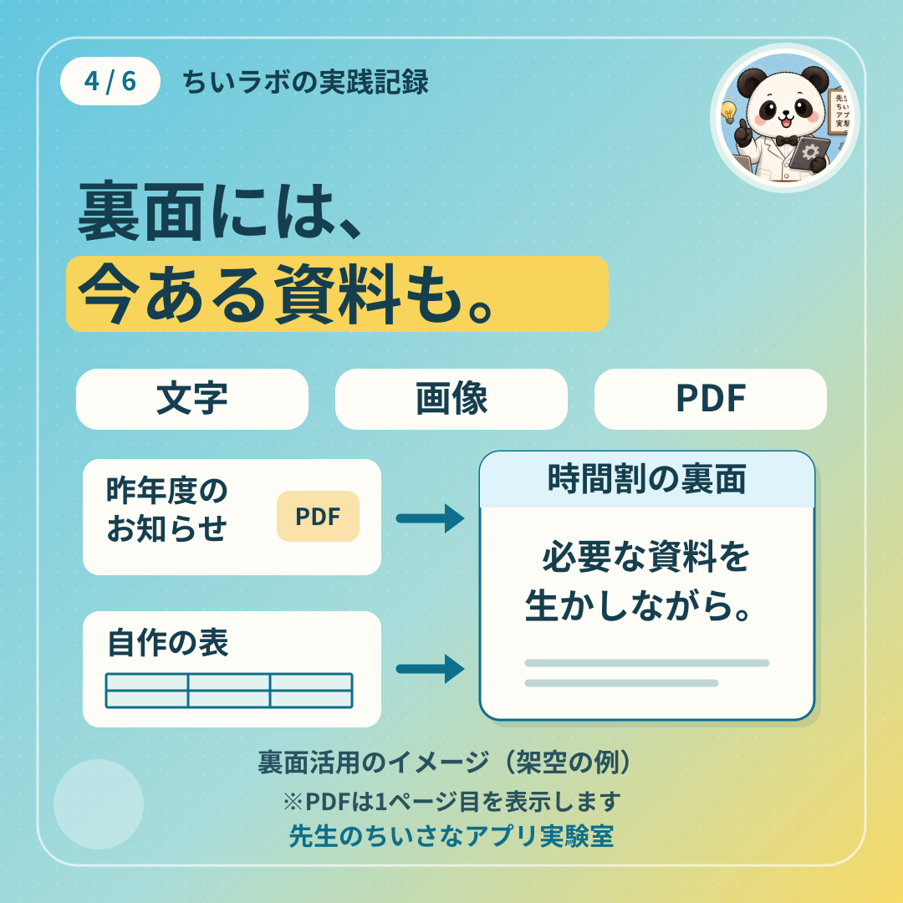

以下の紹介図は仕組みのイメージです。実際の操作画面ではありません。図は押すと拡大できます。
週を整える
その週に合わせて、
切り替える。
日数メニューで5日・6日を選び、前週・次週ボタンで1週間ずつ移動します。
行事・休日は日付と名前を入れて表示。名前が空欄なら「休日」になります。週を移動した後も、日付と行事を確認して使います。

資料を生かす
今年のたたき台を、
手元の資料から。
昨年度の週を参照
このアプリで保存した昨年度のJSONから、近い時期の週を参照。日付・行事・授業の進み具合は今年に合わせて調整します。AIによる予定予測ではありません。
単元候補を使う
教育課程をもとにした単元一覧をJSON・CSV・TXTで登録し、教科や月に応じた候補を使います。CSV・TXTは「月,教科名,単元名」の順。教育課程PDFの本文解析には対応していません。

裏面も使う
今ある資料を、
時間割と一緒に。
裏面には文字のほか、画像やPDFも入れられます。お知らせや自作の表など、手元の資料を生かすための工夫です。
PDFで表示できるのは先頭の1ページです。

使いながら育てる
気付いたことを、ひとつずつ。
「ここを切り替えたい」「この資料も使いたい」。Codexに相談し、形にして確かめ、次の週にまた使う。毎週の仕事の中で、少しずつ直しています。
使う → 気付く → 直す → また使う
制作の背景を、3枚の補足図で見る
紹介シリーズの表紙と、相談・改善の流れです。図中の番号はシリーズの画像番号です。